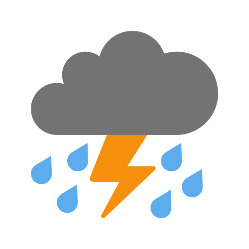

天氣預報（本中心）
今日天氣
受偏東氣流影響。天晴，部分時間多雲。吹2至3級南至東南風。氣溫約為攝氏18至24度。相對濕度介乎百分之55至95之間。
明日天氣
受偏東氣流影響。多雲，部份時間天晴。早晚有薄霧。吹2至3級東至東南風。氣溫約為攝氏19至25度。相對濕度介乎百分之60至95之間。
七日天氣展望
今明兩日日間陽光充沛。 受地面偏東氣流及低空暖濕氣流共同影響，預料下週初至中期天色以多雲為主，早晚天氣潮濕及有薄霧，有幾陣雨。 一道低壓槽與高空擾動會在下周後期為廣東地區帶來驟雨天氣。
02-22

02-23

02-24

02-25
02-26
02-27
02-28
(發佈/更新時間：2026年02月21日17時00分)